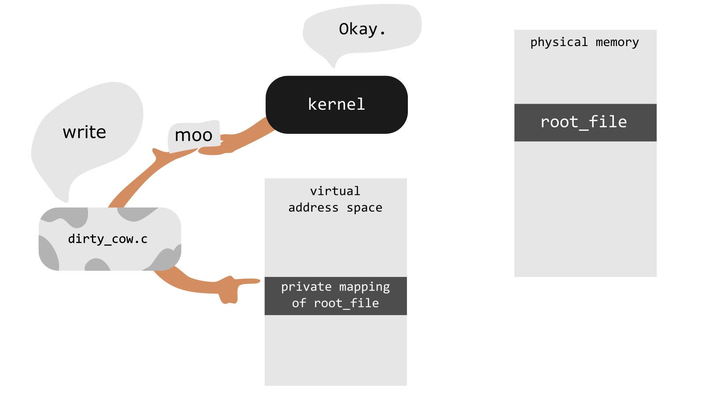

Understanding Dirty COW - The Linux Kernel Exploit
Dirty COW is a computer security vulnerability that was discovered in the Linux Kernel in 2016. The exploit was registered under CVE with the designation: CVE-2016-5195. Dirty COW is a root privilege escalation exploit that attacks the Copy-On-Write mechanism in the Linux Kernel. Hence the “COW” in Dirty COW. The proof of concept can be found here.
The vulnerability existed in the Linux Kernel since 2007, but was discovered later in 2016, by Phil Oester. It has been patched in Linux kernel versions 4.8.3, 4.7.9, 4.4.26 and newer. The exploit also attacked Android devices. It allows a user to write to a read-only root file and escalate privileges.
What is Copy-On-Write Mechanism?
Linux kernel has a mechanism that when a process requests a copy of some file, the kernel does not create a copy of the file until the file is requested to be written to. Copy-On-Write Mechanism works in two steps:
Locate/generate a physical address in the memory.
Write to the copy only when the file is requested to be written to.
COW is basically an optimization strategy used by the Linux kernel. The COW concept is also used in maintenance of instant snapshot on database servers like Microsoft SQL Server 2005. Instant snapshots preserve a static view of a database by storing a pre-modification copy of data when underlaying data are updated. Instant snapshots are used for testing uses or moment-dependent reports and should not be used to replace backups.
How Dirty COW exploits the Copy-On-Write Mechanism?
The exploit creates a private copy(mapping) of a read-only file(which is the file owned by root). Now it tries to write to the private copy. Now the COW mechanism comes into picture. Since the file is never requested to be written to, and now it is - COW does it job.
The write action in COW has the two operations as explained above. These operations are non-atomic in nature. We say that an operation is atomic when it has only two states- Either the operation is complete or it is not. The atomic operation completes in a single step and no other process/thread can access the data owned by that operation. Non-atomic operations can have intermediate stages as well, which includes partial execution of the instruction & they can have shared memory accessible by multiple threads or processes at the same time. Since these operations are non-atomic, another thread can get right in the middle of the two operations (locate physical address & write to physical address)
In the Dirty COW exploit, initially a private mmap (memory map of the read-only file in the main memory) is created. As per the Linux man page: Mmap is a system call used to allocate memory, or map files or devices into memory). The reason to create a private mmap is that, the system makes all the write changes to the private mapping without affecting the original file.
Dirty COW uses two threads- The first thread does not directly write to the actual memory allocated by the mmap, but it writes to /proc/self/mem. This path is the virtual representation of the exploit executable that is running. The reason to write to this location is because the vulnerability resides in the process-to-process virtual memory access. In short, the thread requests the kernel to write to the private mapping that was initially created with mmap. Thus COW is coming into picture now. The other thread executes the madvise system call. As per the Linux man page: the madvise() system call allows a process that has knowledge of its memory behavior to describe it to the system. The advice passed in may be used by the system to alter its virtual memory paging strategy. This thread says to the kernel (”advices”) that the private mapping that was created initially, is not required anymore and thus should be thrown away.
The two threads are running concurrently, and thus in the context switching mechanism, a scenario will occur as shown below :
| Locate physical address | |
| Throw away private copy | |
| Write to physical address |
Thus the second thread has successfully managed to get in between the two non atomic operations. Thus before writing to the physical address, the mmap is discarded. Now since it does not have any address to write to, it writes to the original read-only file. Thus, the kernel is tricked into thinking that the write was to the original read-only file. This is a race condition exhibited due to write attempts at a location that never exists. And this is how the actual exploit works.
The following diagram taken from here gives an apt visual representation of the exploit. 
How does Dirty COW gets root privileges?
Since the exploit is now able to write to read-only files, the /etc/sudoers file can be written to. This will add the current user to the sudoers list, thereby escalating privileges. Even the /etc/shadow file can be manipulated to change the root password. Several versions of the exploit were implemented attacking SUID binaries, writing to read-only files. Another version of the exploit existed, which used an alternative method to exploit the process-to-process virtual memory access (with ptrace).
Implementation Details
The below code snippet gives a general idea of how the exploit was implemented in C. Most of the functions used here are a part of the Linux Kernel API and hence the necessary headers are required to be included. This snippet just gives a brief overview of the programming part of the exploit.
pthread_t pth1,pth2; // The two threads are created
f = open("read-only-file",O_RDONLY); // Open the read-only file
void* map = mmap(void *addr, size_t len, int prot, int flags, int fd, off_t offset); // Memory map is created
pthread_create(pth1,NULL,madviseThread); // Calling thread 1
pthread_create(pth2,NULL,writeToProcSelfMem,"read-only-file"); // Calling thread 2
void *madviseThread()
{
int i,c=0;
for(i=0;i<100000000;i++)
{
c += madvise(map,100,MADV_DONTNEED); // Using madvise and telling the kernel that the allocated space is no longer needed
}
}
void *writeToProcSelfMem(void *arg)
{
char *str;
str = (char*)arg;
int f = open("/proc/self/mem",O_RDWR); // Opening /proc/self/mem in read-write mode
int i,c = 0;
for(i=0;i<100000000;i++) {
lseek(f,(uintptr_t) map,SEEK_SET);
c += write(f,str,strlen(str)); // Write to /proc/self/mem the contents of str
}
}
</code>